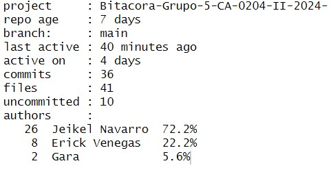
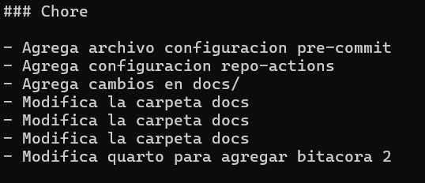
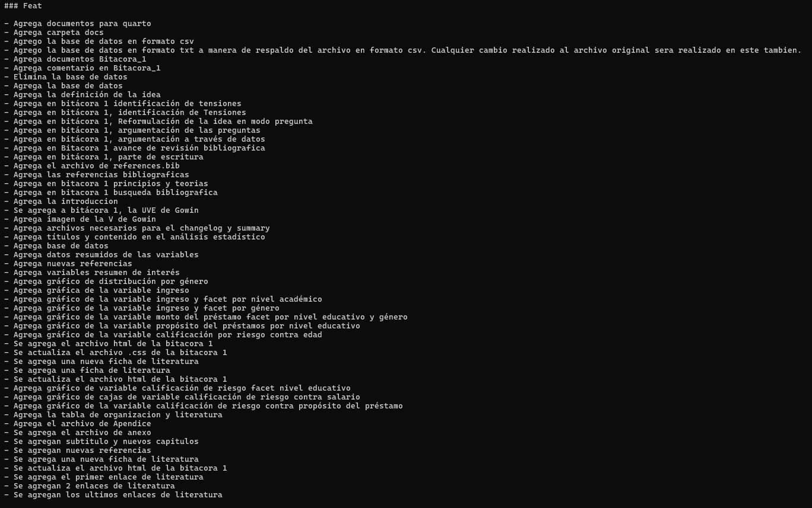
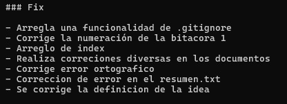
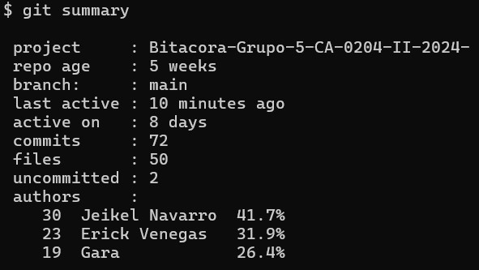
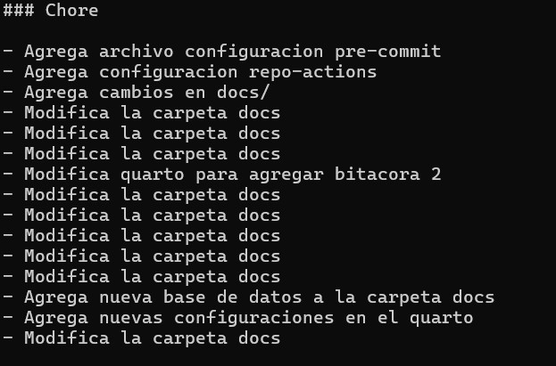
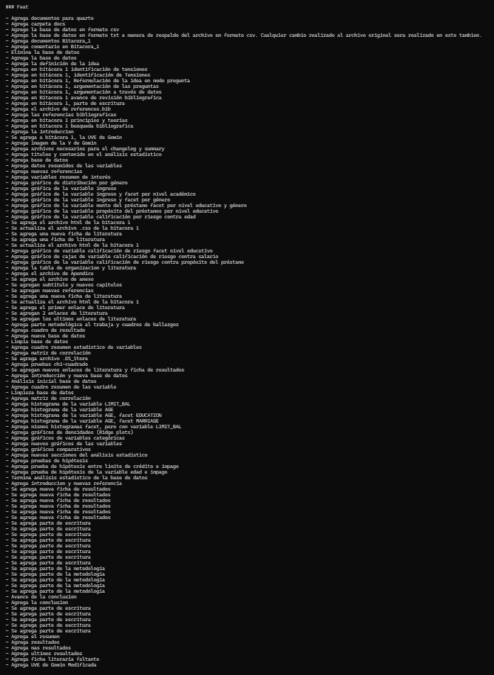
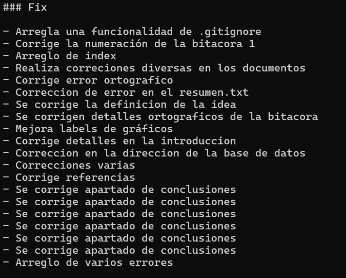
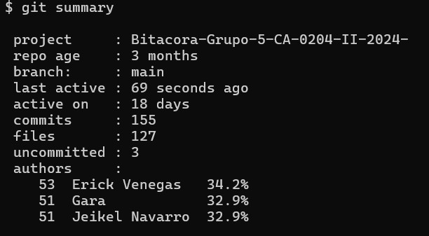

4 Anexo
4.1 Anexo 1 (CHANGELOG Bitacora 1)
Chore Bitacora 1
- Agrega archivo configuracion pre-commit
- Agrega configuracion repo-actions
- Agrega cambios en docs/
- Modifica la carpeta docs
- Modifica la carpeta docs
- Modifica la carpeta docs
Feat Bitacora 1
- Agrega documentos para quarto
- Agrega carpeta docs
- Agrego la base de datos en formato csv
- Agrego la base de datos en formato txt a manera de respaldo del archivo en formato csv. Cualquier cambio realizado al archivo original sera realizado en este tambien.
- Agrega documentos Bitacora_1
- Agrega comentario en Bitacora_1
- Elimina la base de datos
- Agrega la base de datos
- Agrega la definición de la idea
- Agrega en bitácora 1 identificación de tensiones
- Agrega en bitácora 1, identificación de Tensiones
- Agrega en bitácora 1, Reformulación de la idea en modo pregunta
- Agrega en bitácora 1, argumentación de las preguntas
- Agrega en bitácora 1, argumentación a través de datos
- Agrega en Bitacora 1 avance de revisión bibliografica
- Agrega en bitácora 1, parte de escritura
- Agrega el archivo de references.bib
- Agrega las referencias bibliograficas
- Agrega en bitacora 1 principios y teorias
- Agrega en bitacora 1 busqueda bibliografica
- Agrega la introduccion
- Se agrega a bitácora 1, la UVE de Gowin
- Agrega imagen de la V de Gowin
Fix Bitacora 1
- Arregla una funcionalidad de .gitignore
- Corrige la numeración de la bitacora 1
- Arreglo de index
- Realiza correciones diversas en los documentos
- Corrige error ortografico
4.2 Anexo 2 (Participacion Bitacora 1)
Summary Bitacora 1

4.3 Anexo 3 (CHANGELOG Bitacora 2)
Chore Bitacora 2

Feat Bitacora 2

Fix Bitacora 2

4.4 Anexo 4 (Participacion Bitacora 2)
Summary Bitacora 2

4.5 Anexo 5 (CHANGELOG Bitacora 4)
Chore Bitacora 4

Feat Bitacora 4

Fix Bitacora 4

4.6 Anexo 6 (Participacion Bitacora 4)
Summary Bitacora 4

4.7 Referencias bibliográfica
Chicu, Dorina. 2020. “La Valoración Del Riesgo Financiero.”
2020. https://openaccess.uoc.edu/bitstream/10609/150126/1/LaValoracionDelRiesgoFinanciero.pdf.
Edgar Apaza, César Condori, Samuel Cazorla. 2022. “La Correlación
de Pearson o de Spearman En Caracteres Físicos y Textiles de La Fibra de
Alpacas.” 2022. http://www.scielo.org.pe/pdf/rivep/v33n3/1609-9117-rivep-33-03-e22908.pdf.
Hadley Wickham, Garrett Grolemund. 2019. “R for Data Science (2nd
Ed.).” 2019. https://digitallibrary.tsu.ge/book/2019/september/books/R-for-Data-Science.pdf.
Maria de los Ángeles Herrera, Juan Terán. 2024. “Conceptualización
Del Riesgo de Los Mercados Financieros.” 2024. https://www.redalyc.org/pdf/900/90075920006.pdf.
Palacios, Alberto. 2012. “Calificación de Riesgo: Definición e
Influencia En La Última Década.” 2012. https://digibuo.uniovi.es/dspace/bitstream/handle/10651/4017/ACC-.pdf;jsessionid=723581A47435AFB6D2FEC05A70379F77?sequence=1.
Pértega Díaz, S., and S. Pita Fernández. 2004. “Asociación de
Variables Cualitativas: El Test Exacto de Fisher y El Test de
McNemar.” Cadernos de Atención Primaria 11: 304–8. https://www.agamfec.com/wp/wp-content/uploads/2015/07/14_Invest_N11_5.pdf.
Solis, Maikol. 2024. “Guía Del Curso: Herramienta Para Ciencia de
Datos.” 2024. https://maikolsolis.com/libros/hpcd/.
Walpole, Ronald E., Raymond H. Myers, Sharon L. Myers, and Keying E. Ye.
1999. Probabilidad y Estadística. Prentice Hall. https://books.google.co.cr/books/about/Probabilidad_y_estad%C3%ADstica.html?hl=es&id=kz1VAAAACAAJ&redir_esc=y.